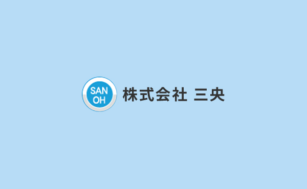

- Home
- 【調査専門会社に依頼するメリット】
配管調査専門の当社にお任せください
株式会社三央は、排水管・給水管の内視鏡調査を行う専門の会社です。東京23区・関東をはじめ全国に対応しており、これまでに数多くの実績を重ねてきました。
人が健康を維持するため医師の健康診断を受けるのと同じように、配管においても専門家による定期的な調査・メンテナンスが必要です。排水管・給水管の調査なら、どうぞ配管調査専門の当社にお任せください。
建物を長生きさせるには“調査”が必要です

人は、体の調子が悪くなった場合に、まずどこが悪いかを調べる検査をします。これは、建物についても同じです。とくに問題がなくても定期調査が必要であり、また悪いところが見つかったときには、その原因を調査することが大事です。
水のトラブルは建物の寿命に関わるため、調査は欠かせないものだと言えます。排水管・給水管については配管専門の調査会社に依頼することで、正確なトラブルの原因をすぐに把握できます。建物を長生きさせるため、積極的に調査を実施しましょう。
セカンドオピニオンとしてもご相談いただけます
人の病気の検査と同様に、排水管・給水管の調査にもセカンドオピニオンが大事だと言えます。なぜならセカンドオピニオンを受けることで原因がより明確になったり、1社だけの調査では見つからなかったトラブルの原因を発見したりすることが可能だからです。
また修繕工事会社で調査をする場合もありますが、その多くは簡易的なものです。そのため2次チェックとして、専門の調査会社に依頼することが大切になります。株式会社三央は調査専門の会社として、排水管・給水管の定期清掃や、施工業者への依頼方法などについてアドバイスも差し上げています。セカンドオピニオンとしても、どうぞお気軽にご相談ください。
-
リスク1：シロアリが発生する
-
配管トラブルによって生じている水漏れを放置すると、湿度を好むシロアリが棲みつきます。シロアリはどんどん繁殖して建材を食い散らかし、家自体の強度を落としてしまいます。
-
リスク2：漏電事故が起きる
-
水漏れによって浸水している照明などに気づかず触れてしまうと、感電するおそれがあります。感電は命を脅かすものです。また漏電を原因に火災が起こる可能性も否定できません。
-
リスク3：カビが発生する
-
水漏れは屋内の湿度を高め、カビを発生させる原因になります。家中にカビが広がってしまうと除去には手間がかかります。またカビはアレルギーの原因にもなるなど、人体にも危険です。
-
リスク4：配管が破裂する
-
定期的なメンテナンスをせずトラブルを放置すれば、配管の寿命は短くなります。古くなりすぎれば破裂してしまうこともあります。
精度の高い調査なら株式会社三央にお任せください
株式会社三央の代表は、業界歴30年。長年調査一筋で専門性を極めてきました。経験豊富なため、お客様の状況に合わせた対応・調査が可能です。またどこよりもくわしい報告書を作成できるのも、当社の強みだと言えるでしょう。
もし報告書の内容でわからない箇所がありましたら、ご理解いただけるよう噛み砕いてご説明しますので何でもおたずねください。またマンションの管理組合の集会でお使いいただける、内視鏡調査の映像もご提供が可能です。業界歴30年以上の代表が直接対応いたしますので、どうぞ安心して調査をお任せください。